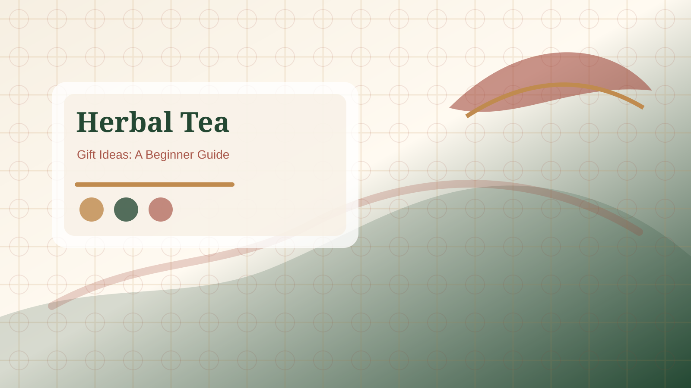

Routine
Evening and daily-use pages help readers choose a repeatable cup.

Use this hub to match herbal tea bags to ordinary situations: evening cups, after-meal flavor, office storage, gifts, and caffeine-free labels.
Quick Answer: The scenarios hub helps you choose the right next page by use case. Pick a routine, flavor, office, gift, or label question first, then compare tea bags by ingredients, caffeine wording, packaging, and preparation details.

Begin with the reader situation, not the most attractive product name. An evening routine needs caffeine clarity and a gentle flavor. An after-meal moment needs warm flavor notes and simple preparation. An office desk needs storage, wrappers, and low mess. A gift needs packaging, serving count, and broad flavor appeal. A caffeine-free label question needs careful wording and ingredient checks.
A scenario page explains fit. A product page compares product types. If you already know you need caffeine-free herbal tea bags, go to the product page. If you are not sure whether the need is evening, office, gift, or after-meal flavor, use this hub to narrow the choice first.
A scenario is not a health claim. Words such as calm, warm, light, clean, or soothing describe drinking experience and flavor context. They do not guarantee sleep, digestion, stress relief, or medical results.
If the reader is choosing for themselves, start with routine and flavor. If they are choosing for another person, start with packaging, serving count, and broad taste appeal. If they are choosing for a workplace, start with storage, wrappers, cup mess, and preparation time. If caffeine is the concern, go directly to the caffeine-free label FAQ before comparing boxes. This hub exists to reduce guesswork: each scenario should send the reader to a narrower page instead of asking them to read every product guide at once.
A reader should not need to understand every tea category before using the hub. The page should answer a simple routing question: am I buying for a routine, a flavor, a workplace, a gift, or a label concern? Once that choice is clear, the reader can open one focused page and avoid bouncing between unrelated product names. That is why the hub emphasizes practical situations instead of broad wellness language.
Reference: NCCIH herbs and supplement safety overview.
Evening and daily-use pages help readers choose a repeatable cup.
Warm, floral, mint, ginger, citrus, and spice pages help compare taste expectations.
Office and gift pages focus on packaging, storage, presentation, and recipient fit.
Start with a scenario if you are not sure what kind of tea bag fits the moment. Use a product page when the product type is already clear.
No. They describe flavor, packaging, preparation, and routine fit only.
Yes. A caffeine-free floral tea bag might fit evening use and gift use, but each context has different checks.
Open the most specific scenario, then compare related products or read the FAQ for label details.